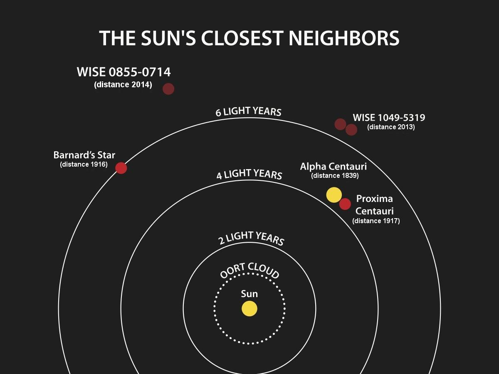
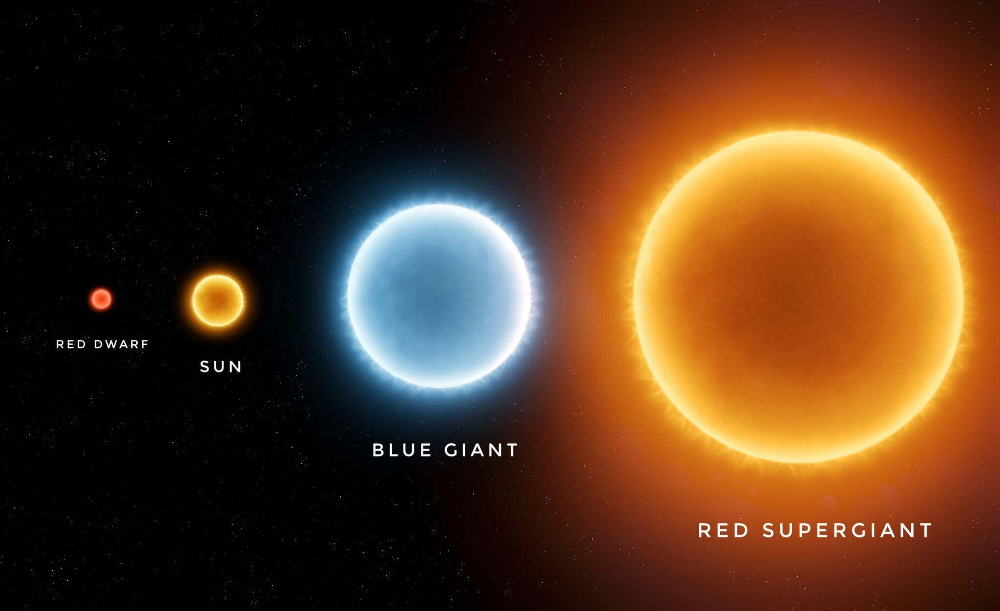
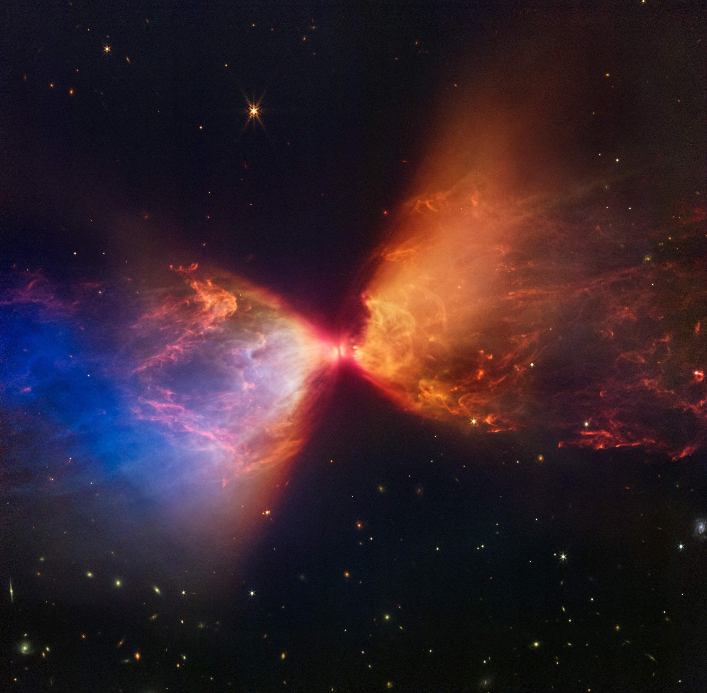

Las estrellas: gigantes luminosas del universo

¿Qué son las estrellas?
Las estrellas son enormes esferas de gas muy caliente, compuestas principalmente por hidrógeno y helio. Producen su propia luz y energía mediante un proceso llamado fusión nuclear, en el que los núcleos de hidrógeno se unen para formar helio.
Se encuentran distribuidas por todo el universo y pueden presentar grandes diferencias en tamaño, temperatura, color, brillo y duración. Aunque desde la Tierra parecen pequeños puntos luminosos, muchas son muchísimo más grandes que nuestro planeta.
¿Cómo nacen las estrellas?
Las estrellas se forman en enormes nubes de gas y polvo llamadas nebulosas. La gravedad provoca que parte de estos materiales se concentren y comiencen a contraerse, aumentando progresivamente su temperatura.
Durante este proceso se forma una estructura llamada protoestrella. Cuando su núcleo alcanza las condiciones necesarias para iniciar la fusión nuclear, comienza a producir energía y se convierte en una estrella.

Tipos de estrellas
Las estrellas se pueden clasificar según su temperatura, color, tamaño y etapa de evolución. Cada tipo presenta características particulares que permiten diferenciarlas.
- Enanas rojas: son estrellas pequeñas, relativamente frías y de color rojizo. Son muy abundantes y pueden permanecer estables durante muchísimo tiempo.
- Enanas amarillas: tienen temperaturas intermedias y un color amarillo o blanco amarillento. El Sol pertenece a esta categoría.
- Estrellas azules: son extremadamente calientes y suelen tener una masa mucho mayor que la del Sol. Consumen su combustible rápidamente.
- Gigantes rojas: son estrellas que han avanzado en su evolución y han aumentado considerablemente su tamaño, mientras su superficie se vuelve más fría.
- Supergigantes: son estrellas de dimensiones extraordinarias. Pueden ser rojas o azules y algunas terminan su vida mediante una explosión de supernova.
- Enanas blancas: son los núcleos densos que quedan después de que determinadas estrellas, como el Sol, expulsan sus capas exteriores.
¿Por qué las estrellas tienen diferentes colores?
El color de una estrella está relacionado principalmente con la temperatura de su superficie. Por esta razón, algunas estrellas se observan azules, mientras que otras presentan tonalidades blancas, amarillas, naranjas o rojas.
Estrellas azules y blancas
Son las estrellas con temperaturas superficiales más elevadas. Las azules pueden superar los 10.000 °C y suelen emitir grandes cantidades de energía.
Estrellas amarillas
Tienen temperaturas intermedias. El Sol es un ejemplo de este tipo de estrella y su temperatura superficial es de aproximadamente 5.500 °C.
Estrellas naranjas y rojas
Presentan temperaturas superficiales más bajas que las estrellas azules. Las enanas rojas son pequeñas y frías, mientras que las gigantes rojas pueden alcanzar tamaños enormes durante las últimas etapas de su evolución.
Las estrellas más cercanas a la Tierra
El Sol es la estrella más cercana a nuestro planeta. Después de él, existen otras estrellas que se encuentran a enormes distancias. Para medir estas distancias, los astrónomos utilizan una unidad llamada año luz.
¿Qué es un año luz?
Un año luz es la distancia que recorre la luz en un año, aproximadamente 9,46 billones de kilómetros. No es una medida de tiempo, sino de distancia.
Próxima Centauri
Es la estrella más cercana al Sol después de nuestra propia estrella. Se encuentra aproximadamente a 4,25 años luz y pertenece al sistema estelar de Alfa Centauri. Es una enana roja pequeña y poco luminosa.
Alfa Centauri A y B
Son dos estrellas que forman parte del sistema Alfa Centauri, ubicado a aproximadamente 4,37 años luz. Alfa Centauri A es parecida al Sol, mientras que Alfa Centauri B es algo más pequeña y fría.
Estrella de Barnard
Es una enana roja situada a unos 5,96 años luz de la Tierra. Es conocida por su rápido movimiento aparente a través del cielo en comparación con otras estrellas cercanas.
Sirio
Se encuentra aproximadamente a 8,6 años luz y es la estrella más brillante del cielo nocturno. En realidad, forma un sistema de dos estrellas: Sirio A y Sirio B.
Algunas de las estrellas más cercanas al Sol son:
- Sol: nuestra estrella más cercana.
- Próxima Centauri: aproximadamente 4,25 años luz.
- Alfa Centauri A y B: aproximadamente 4,37 años luz.
- Estrella de Barnard: aproximadamente 5,96 años luz.
- Wolf 359: aproximadamente 7,86 años luz.
- Sirio: aproximadamente 8,6 años luz.
El ciclo de vida de las estrellas
Las estrellas nacen, evolucionan y finalmente llegan al final de su vida. Su destino depende principalmente de la cantidad de masa que poseen y de cómo consumen su combustible nuclear.
Estrellas similares al Sol
Después de permanecer miles de millones de años en una etapa estable, estas estrellas comienzan a expandirse y se convierten en gigantes rojas. Posteriormente, expulsan sus capas exteriores, formando una nebulosa planetaria, y su núcleo queda como una enana blanca.
Estrellas masivas
Las estrellas mucho más masivas que el Sol consumen su combustible a mayor velocidad. Al llegar a las últimas etapas de su evolución, algunas explotan como supernovas y dejan restos que pueden convertirse en estrellas de neutrones o agujeros negros.
Las supernovas
Son explosiones estelares extremadamente energéticas que pueden producirse al final de la vida de ciertas estrellas. Durante estos acontecimientos se expulsan grandes cantidades de material al espacio, enriqueciendo el universo con elementos químicos.

Los sistemas de estrellas
Aunque muchas estrellas parecen estar aisladas, algunas forman sistemas en los que dos o más estrellas se mantienen relacionadas por la gravedad y orbitan alrededor de un centro de masa común.
Estrellas binarias
Son sistemas formados por dos estrellas que orbitan alrededor de un centro de masa común. Un ejemplo conocido es Sirio, compuesto por Sirio A y Sirio B.
Sistemas múltiples
Están formados por tres o más estrellas relacionadas gravitacionalmente. Sus movimientos pueden ser complejos y permiten estudiar cómo interactúan estos cuerpos celestes.
Cúmulos estelares
Son agrupaciones de estrellas que se encuentran relativamente próximas entre sí y que pueden compartir un origen común. Algunos cúmulos contienen cientos o miles de estrellas.
El estudio y la observación de las estrellas
Desde hace siglos, los seres humanos han observado las estrellas para comprender el universo. Actualmente, los astrónomos utilizan telescopios terrestres y espaciales para estudiar su luz, temperatura, composición y movimiento.
- Telescopio espacial Hubble: ha permitido observar estrellas, nebulosas y galaxias con gran detalle.
- Telescopio espacial James Webb: permite estudiar regiones donde nacen estrellas y observar diferentes etapas de su formación.
- Observatorio Gaia: fue una misión espacial de la Agencia Espacial Europea dedicada a elaborar un mapa tridimensional de nuestra galaxia, midiendo posiciones y movimientos de millones de estrellas.
- Espectroscopia: es una técnica que permite analizar la luz de las estrellas para obtener información sobre su temperatura y composición química.
Gracias a estos avances, los científicos han logrado conocer mejor la vida de las estrellas y comprender cómo contribuyen a la evolución del universo.
Curiosidades sobre las estrellas
Las estrellas esconden fenómenos sorprendentes que nos ayudan a comprender lo extraordinario que es el universo. Estos son algunos datos interesantes que quizás no conocías:
- El Sol es una estrella: aunque lo vemos mucho más grande y brillante que las demás, esto se debe principalmente a que está muchísimo más cerca de nosotros.
- Mirar al cielo es mirar al pasado: la luz de las estrellas tarda tiempo en llegar a la Tierra, por lo que las observamos tal como eran cuando emitieron esa luz.
- Las estrellas azules son más calientes: aunque asociamos el color rojo con el calor, en las estrellas ocurre lo contrario: las azules tienen temperaturas superficiales más elevadas.
- Existen estrellas gigantes: algunas tienen radios cientos de veces mayores que el del Sol.
- Las estrellas pueden vivir muchísimo tiempo: las enanas rojas pueden permanecer estables durante períodos extraordinariamente largos.
- El Sol no está solo: forma parte de la Vía Láctea, una galaxia que contiene cientos de miles de millones de estrellas.
- Somos parte de las estrellas: muchos elementos químicos presentes en nuestro planeta y en los seres vivos se formaron en estrellas y en acontecimientos relacionados con su evolución.